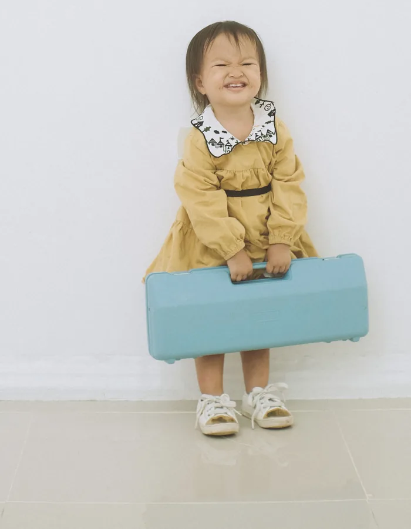

Viajar con niños puede ser una experiencia fantástica, pero también cambia bastante la forma de organizar unas vacaciones. Los horarios, el equipaje, los desplazamientos, el alojamiento y hasta el número de actividades que caben en un día pueden ser diferentes cuando viajamos en familia.
Por eso, unas buenas vacaciones no tienen por qué ser aquellas en las que conseguimos visitar más lugares o hacer más actividades.
Muchas veces funcionan mejor cuando encontramos un ritmo que permita disfrutar del viaje sin convertir cada día en una carrera.
Viajar con niños implica adaptar algunos planes, dejar margen para los imprevistos y aceptar que no todo saldrá exactamente como estaba previsto.
Y eso también forma parte de viajar.
No todas las familias disfrutan del mismo tipo de vacaciones.
A algunas les encanta descubrir ciudades y visitar lugares diferentes cada día.
Otras prefieren pasar varios días en un mismo sitio.
Algunas disfrutan de la naturaleza, mientras que otras prefieren la playa, los pueblos, los museos o las actividades.
Antes de empezar a planificar, puede ser útil preguntarse:
¿Qué tipo de viaje podemos disfrutar todos?
También conviene tener en cuenta la edad de los niños, su capacidad para caminar durante largos periodos, sus horarios habituales y la forma en que reaccionan ante los cambios.
Un viaje perfecto sobre el papel puede no ser el más adecuado para una familia concreta.
Viajar con un bebé no plantea las mismas necesidades que hacerlo con un niño de 4 años o con uno de 10.
Con los más pequeños puede ser especialmente importante tener en cuenta:
A medida que crecen, pueden participar más en la planificación y asumir pequeñas responsabilidades.
Por eso, no existe una fórmula universal para viajar con niños.
El viaje debe adaptarse progresivamente a la etapa en la que se encuentra cada familia.
Si quieres orientación sobre qué puede tener sentido en cada etapa, puedes consultar nuestras páginas por edades.
Una de las tentaciones habituales al viajar es intentar aprovechar cada minuto.
Visitar un lugar, después otro, comer rápidamente, continuar con otra actividad y terminar el día agotados.
Con niños, este ritmo puede resultar especialmente difícil.
Puede ser más agradable elegir menos planes y disfrutar más de ellos.
Si hay tres lugares que realmente queréis conocer, quizá no sea necesario añadir otros cinco simplemente porque están cerca.
Dejar tiempo libre también forma parte del viaje.
Una buena planificación puede evitar muchos problemas, pero no hace falta organizar absolutamente cada momento.
Puede ser útil reservar con antelación aquello que realmente lo necesita:
Pero entre esos puntos puede quedar espacio para decidir sobre la marcha.
Un viaje familiar puede tener una estructura sencilla:
algo que queremos hacer + algo que podemos descubrir + tiempo para descansar.
No hace falta que cada hora tenga un plan.
Cuando pensamos en viajar solemos pensar en el destino.
Pero para los niños, el trayecto puede ser una parte importante de la experiencia.
Un viaje largo en coche, tren o avión puede resultar cansado, especialmente para los más pequeños.
Por eso conviene pensar con antelación en:
No siempre podremos controlar cuánto dura un trayecto, pero sí podemos intentar hacerlo lo más llevadero posible.
Si viajáis en coche, las paradas no deberían plantearse únicamente como una interrupción necesaria.
También pueden convertirse en una oportunidad para estirar las piernas, comer algo, descansar o simplemente cambiar de ambiente.
Con niños pequeños, parar cuando sea necesario puede ser mucho más útil que intentar mantener un horario rígido.
El objetivo no es llegar lo antes posible.
Es llegar en unas condiciones que permitan continuar disfrutando del viaje.
Cuando viajamos con niños es fácil acabar preparando una maleta enorme "por si acaso".
Pero llevar demasiadas cosas también puede complicar los desplazamientos.
Antes de preparar el equipaje puede ayudar pensar en:
También conviene preparar una pequeña bolsa con aquello que puede necesitarse durante el trayecto.
Así no será necesario abrir toda la maleta para encontrar algo.
Si quieres más ideas para organizar el equipaje y los espacios de casa, puedes leer nuestro artículo sobre organización y hogar.
Durante un desplazamiento largo, algunas cosas deberían estar accesibles.
Por ejemplo:
No hace falta llevarlo todo encima.
La idea es simplemente evitar que una necesidad sencilla se convierta en un problema porque está guardada en el fondo del equipaje.
A medida que crecen, los niños pueden participar progresivamente en la preparación del viaje.
Pueden ayudar a:
Esto no solo reduce parte del trabajo de los adultos.
También ayuda a que el niño entienda que viajar es algo que se prepara y se comparte entre todos.
Los cambios pueden resultar más fáciles cuando los niños saben qué esperar.
No hace falta explicar cada detalle.
Puede ser suficiente con contarles:
"Primero vamos al aeropuerto, después cogemos el avión y al llegar iremos al alojamiento."
O:
"Hoy vamos a visitar este lugar y después tendremos tiempo para jugar y descansar."
Tener una idea general de lo que va a suceder puede ayudar especialmente cuando se trata de un viaje diferente a la rutina habitual.
No todos los alojamientos funcionan igual de bien para todas las familias.
A la hora de elegir, puede ser útil pensar en:
No hace falta buscar el alojamiento con más prestaciones.
Lo importante es que encaje con las necesidades reales de la familia.
Las vacaciones están precisamente para romper parte de la rutina.
No es necesario intentar mantener exactamente los mismos horarios que durante el resto del año.
Pero algunas pequeñas referencias pueden ayudar a los niños.
Por ejemplo:
No se trata de convertir las vacaciones en una versión del día a día.
Se trata de conservar algunos puntos de referencia mientras disfrutáis de algo diferente.
Un error frecuente al organizar unas vacaciones es pensar que cada día tiene que aprovecharse al máximo.
Pero después de varios días de desplazamientos, visitas y actividades, los niños pueden necesitar simplemente un día tranquilo.
Puede ser:
Un día sin grandes planes no significa que estéis perdiendo el tiempo.
También estáis de vacaciones.
Una actividad puede ser fantástica para los adultos y poco interesante para un niño.
Antes de incluir algo en el itinerario, puede ser útil preguntarse:
No significa que todas las actividades tengan que estar diseñadas específicamente para niños.
Los adultos también deben disfrutar del viaje.
La clave está en buscar un equilibrio.
Cuando viajamos con niños puede aparecer la tentación de convertir cada experiencia en una oportunidad de aprendizaje.
Un museo puede enseñar historia.
Un viaje puede enseñar geografía.
Una excursión puede enseñar naturaleza.
Todo eso puede ser maravilloso.
Pero también está bien visitar un lugar simplemente porque es bonito, jugar, comer algo diferente o disfrutar de una tarde sin ningún objetivo educativo.
Las vacaciones también son tiempo libre.
Comer fuera de casa varias veces al día puede cambiar bastante la rutina.
Dependiendo de la edad del niño, puede ser útil tener en cuenta:
No es necesario llevar una planificación gastronómica completa.
Pero sí puede ser útil saber dónde podréis comer y tener alguna alternativa sencilla cuando el plan principal no funcione.
Con niños, cualquier viaje puede incluir cambios inesperados.
Un vuelo puede retrasarse.
Puede llover.
Una actividad puede cancelarse.
El niño puede estar cansado.
Puede surgir una necesidad que no estaba prevista.
Por eso conviene evitar itinerarios demasiado ajustados.
Dejar cierto margen permite reaccionar mejor cuando algo cambia.
Un poco de espacio en el calendario puede valer más que una actividad adicional.
Si vais a realizar actividades al aire libre, conviene consultar las condiciones meteorológicas y adaptar los planes.
No tiene sentido mantener un itinerario rígido si las condiciones hacen que una actividad resulte incómoda o poco adecuada.
Tener alternativas sencillas puede ser suficiente.
Por ejemplo:
El objetivo no es evitar cualquier cambio.
Es tener suficiente flexibilidad para adaptarse.
Si quieres más ideas para acercar la lectura al día a día, puedes leer nuestro artículo sobre lectura y cultura infantil.
Especialmente durante los desplazamientos, puede ser útil preparar diferentes opciones.
No hace falta llevar una cantidad enorme.
Algunas posibilidades son:
Las pantallas también pueden formar parte del entretenimiento si la familia decide utilizarlas.
La cuestión es disponer de diferentes opciones y elegir las que mejor funcionen en cada situación.
Si buscas más ideas para equilibrar el ocio digital con otras propuestas, puedes leer nuestro artículo sobre pantallas y ocio.
Una de las cosas más interesantes de viajar con niños es que pueden participar activamente en el descubrimiento.
Pueden:
No hace falta convertirlo en una actividad escolar.
Simplemente dejar espacio para la curiosidad puede hacer que el viaje resulte más enriquecedor.
Las vacaciones pueden generar la sensación de que hay que guardar cada momento en fotografías.
Pero también es importante vivirlos.
No hace falta documentar cada actividad.
A veces puede ser más agradable observar lo que está ocurriendo, hablar con los niños y disfrutar del momento.
Las fotografías pueden conservar recuerdos.
Pero los recuerdos también se construyen mientras estamos viviendo la experiencia.
Una de las grandes ventajas de viajar en familia no es únicamente conocer lugares nuevos.
También es compartir situaciones que no forman parte de la rutina habitual.
Descubrir algo juntos.
Perderse un poco.
Probar algo diferente.
Reírse de un imprevisto.
Recordar una anécdota.
Descubrir que algo que parecía complicado terminó siendo divertido.
Estas experiencias pueden terminar siendo una parte importante de los recuerdos familiares.
Las redes sociales pueden dar la sensación de que otras familias hacen viajes constantemente y que cada vacaciones están llenas de destinos, actividades y experiencias extraordinarias.
Pero cada familia tiene:
No hace falta hacer el mismo viaje que nadie.
Unas buenas vacaciones son aquellas que funcionan para vuestra familia.
No siempre hace falta recorrer cientos o miles de kilómetros para sentir que estamos de vacaciones.
Una escapada cercana, una visita a otra localidad, unos días en la naturaleza o incluso descubrir lugares de nuestra propia región pueden convertirse en experiencias especiales.
Para los niños, lo desconocido puede estar mucho más cerca de lo que pensamos.
A veces cambiar de entorno durante unos días es suficiente para romper la rutina.
Puede que el alojamiento no sea perfecto.
Que llueva más de lo previsto.
Que los niños estén cansados.
Que una excursión no guste.
Que el viaje resulte más complicado de lo imaginado.
No significa que las vacaciones hayan fracasado.
Los viajes familiares también están llenos de momentos imperfectos.
Y algunas de esas situaciones terminan convirtiéndose en las anécdotas que más se recuerdan.
No hace falta que todo salga bien para que el viaje haya merecido la pena.
Viajar con niños requiere algo de planificación, pero también mucha flexibilidad.
Puede ayudar:
No se trata de hacer más cosas durante las vacaciones.
Se trata de encontrar un ritmo en el que todos puedan disfrutar.
Porque cuando viajamos con niños, quizá el mejor plan no sea el que permite tachar más lugares de una lista.
Es el que deja espacio para descubrir, descansar, jugar, sorprenderse y disfrutar juntos.